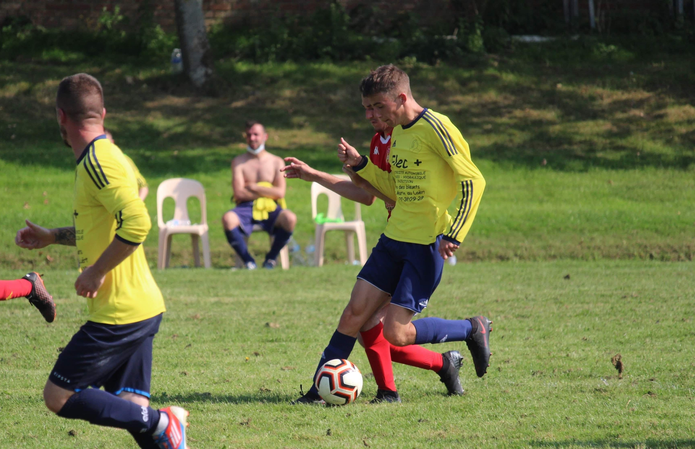
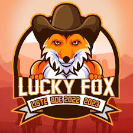
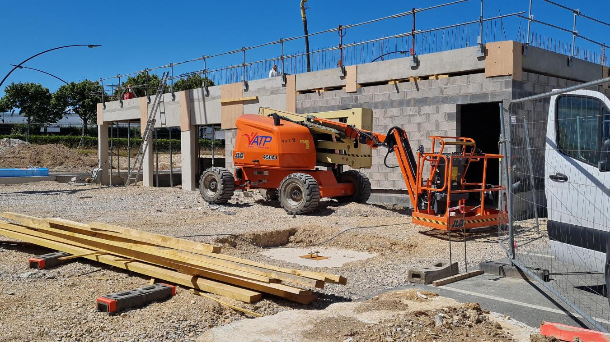
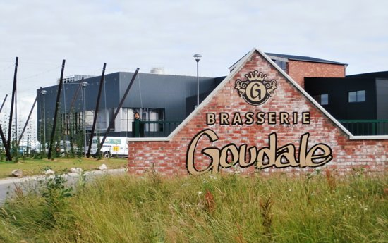
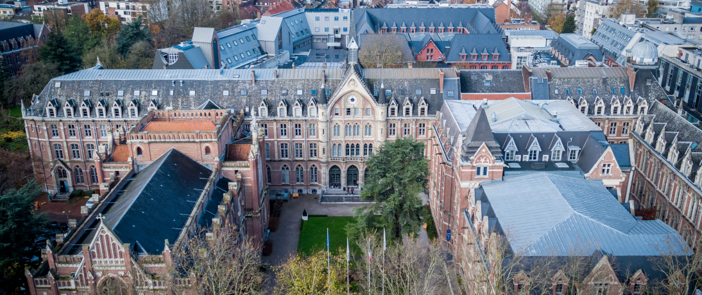
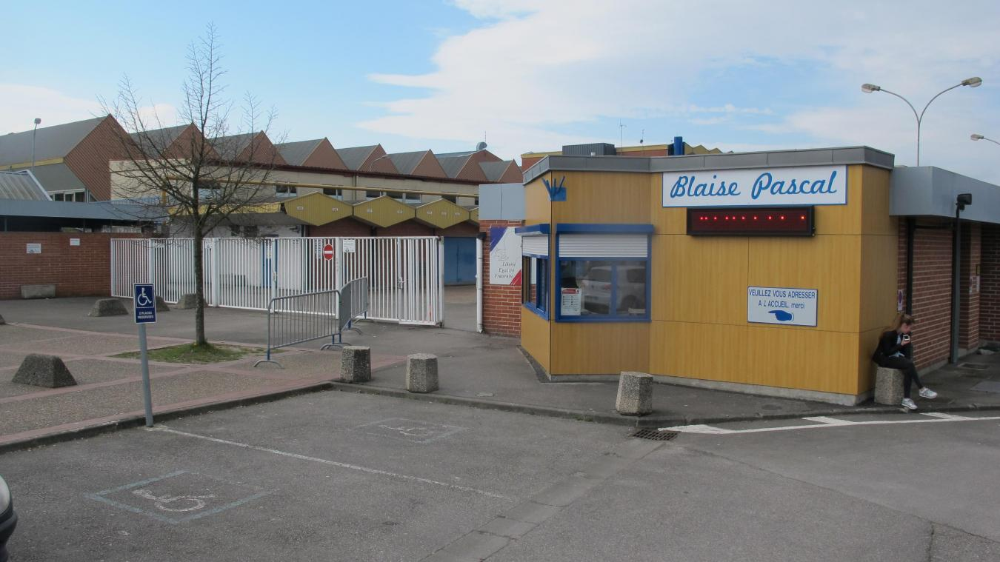
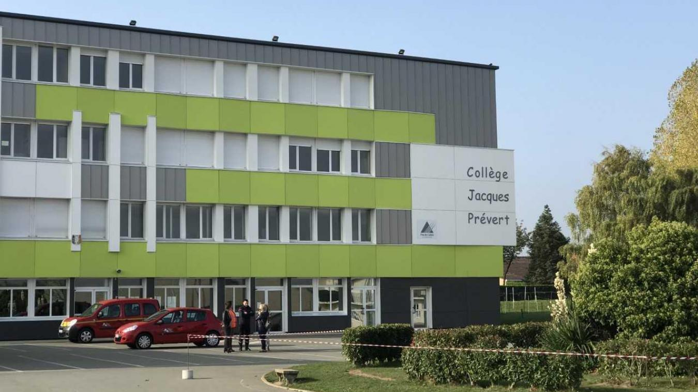

adresse étudiante :
LILLE | 59800
181 rue national
adresse fixe :
SAINT-MOMELIN | 59143
16 rue du vieux chauffour
none
HOBBIES

none
Création d'un club de football avec des amis
Je m'occupe de la partie graphique, du design du compte Instagram de
l'équipe et je suis surtout joueur !
none
SKILLS
none
Anglais : niveau B2 Espagnol : niveau B1
none
Language appris en cours et en application sur des projets :
Python | Bash | Sql | Html Css Js Php | Java | C
Language appris au cours de mon Stage de L1 :
Virtual Basic (Excel) : language de bas niveau
none
WORKS

none
Responsable des Evenements EDN du Bureau des Etudiants de la FGES
2022-2023
- Organisation d'évènements pour les étudiants
- Travailler en équipe
- Communiquer et s'organiser d'un certains groupes de personnes

none
Equipier Polyvalent & Soudeur | 2022 | 2 mois
- Couler du béton & manier ses outils techniques
- Souder différents morceaux de métal
- Aider l'équipe
J'ai pu découvrir les travaux durs physiquement, le monde du bâtiment et
découvrir le maniement des outils

none
Manutentionnaire | 2021 | 1 mois en Interim
L'objectif était de répondre aux demandes des clients, j'ai du :
- Assembler différents produits
- Préparer des coffrets / Travail à la chaîne
Ainsi j'ai pu développé mon travail d'équipe, mon organisation et le
fait de s'intégrer à un groupe.
none
Developpeur Virtual Basic | 2022 | 2 mois
- Developper des outils d'automatisation de tâches
- Apprendre un language de A à Z en autonomie
- Apprendre la vie en entreprise et l'esprit, le travail d'équipe
none
Réparation Informatique | 2017 | 1 semaine
- Remplir des tâches de bureau
- Suivi les missions de réparations de serveurs
- Pu développer ma curiosité et mon attention
none
Cabinet d'Avocat | 2016 | 1 semaine
- Remplir des taches de bureau
- Création de flyer de l'entreprise
- Remplir des taches de bureau
none
SCHOOL

none
Université Catholique Lille - FGES | 2021-24 |
Licence Sciences du Numérique
Lors de mon premier semestre, j'ai pu découvrir différents languages et
pu appronfondir mes connaissances en Python, appris dès la terminale.

Au cours de mes deux dernières années de Lycée, j'ai pu effectué des
projets sur les bases de données, sur de la programmation objet et pu
toucher aux différents domaines de l'Informatique

none
Collège Jacques Prévert - Watten | 2014-18 |
Brevet mention Très Bien
Durant mes 4 années de collège, je me suis aguerrit dans des matières
générales et pu effectuer deux stages dans le monde professionnel
none
CONTACT
none
lucas.maveau@gmail.com
lucas.maveau@lacatholille.fr
Lucas Maveau
lucasmaveau
0781552638